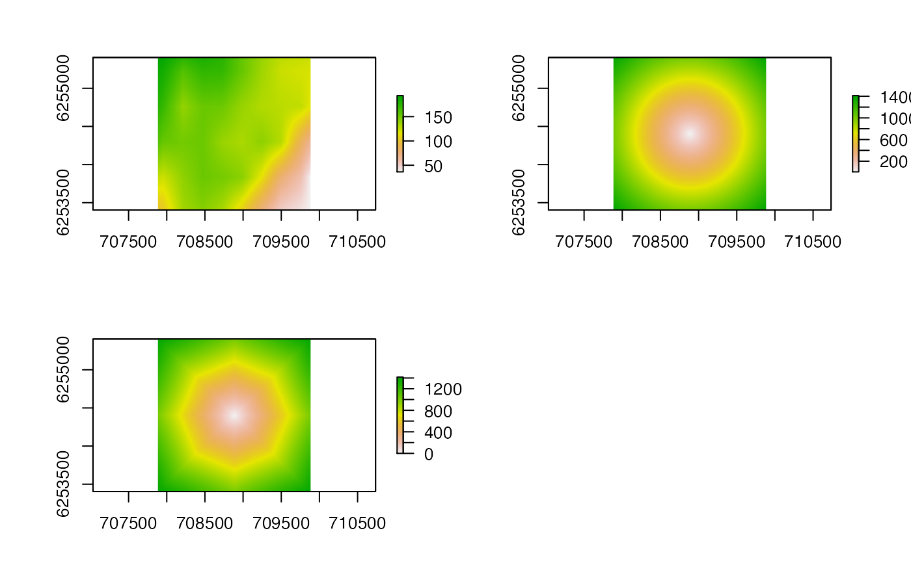

This function calculates the least-cost distances from a point to all (or some) of the cells in a surrounding raster object, returning a raster. This is the least-cost distance equivalent of distanceFromPoints.
lcp_from_point( origin, surface, destination = NULL, cost = NULL, graph = NULL, use_all_cores = FALSE, verbose = TRUE )
| origin | A matrix which defines the coordinates (x, y) of the point from which to calculate least-cost distances. Unlike |
|---|---|
| surface | A |
| destination | (optional) An matrix of destination coordinates; an integer vector of cell IDs; or function that defines a subset of destination cells, given their |
| cost | (optional) A sparse |
| graph | (optional) A graph object that defines cell nodes and edge costs for connected cells within the |
| use_all_cores | A logical input that defines whether or not to parallelise least-cost distance calculations across all cores. This is passed to |
| verbose | A logical input that defines whether or not to print messages to the console to relay function progress. |
The function returns a raster in which each cell represents the least-cost distance from a specified origin to that cell. The origin is assigned a value of zero. Any cells excluded by the destination filter have a value of NA.
This function implements routines provided via flapper and the cppRouting package to calculate least-cost distances. The main steps are:
The calculation of distances between adjacent cells (i.e., cost, if not supplied, via lcp_costs);
The construction of a graph that defines cell connections from the origin to surrounding cells on the surface as a network (via makegraph);
The calculation of shortest distances between the origin and surrounding cells from the graph (via get_distance_matrix);
The expression of shortest distances as a raster which is returned.
This function is similar to distanceFromPoints, which returns a Raster* of Euclidean distances. For iterative applications across the same surface, lcp_costs and lcp_graph_surface can be implemented to define the cost matrix and the graph object outside of this function. These can be passed to lcp_from_point, skipping the need to recompute these objects. For shortest-distances and/or paths between specific origin and destination coordinates, the lcp_over_surface can be used. The particle filtering movement algorithms in flapper (i.e., pf) can implement this approach to ensure that movement paths are biologically realistic.
Edward Lavender
#### Step (1): Define example origin proj <- sp::CRS("+proj=longlat +datum=WGS84 +no_defs +ellps=WGS84 +towgs84=0,0,0")#> Warning: Discarded datum WGS_1984 in CRS definition, #> but +towgs84= values preserved#> Warning: Discarded datum Unknown based on WGS84 ellipsoid in CRS definitionorigin <- matrix(c(-5.616, 56.388), ncol = 2) origin <- sp::SpatialPoints(origin, proj) origin <- sp::spTransform(origin, proj_utm) #### Step (2): Select and process surface # We will focus on an area within the dat_gebco bathymetry raster boundaries <- raster::extent(707884.6, 709884.6, 6253404, 6255404) blank <- raster::raster(boundaries, res = c(5, 5)) r <- raster::resample(dat_gebco, blank) #### Example (1): Implement function using default options lcp_dist <- lcp_from_point(origin = origin, surface = r)#> flapper::lcp_from_point() called (@ 2021-12-02 11:55:25)... #> ... Calculating cost surface... #> flapper::lcp_costs() called (@ 2021-12-02 11:55:25)... #> ... Defining transition matrices...#> Warning: transition function gives negative values#> ... Calculating distance matrices... #> ... Assembling LCP costs... #> ... flapper::lcp_costs() call completed (@ 2021-12-02 11:55:27) after ~0.04 minutes. #> ... Defining nodes, edges and costs to make graph... #> ... Constructing graph object... #> ... Calling cppRouting::get_distance_matrix() to get least-cost distances... #> ... Making raster of least-cost distances from origin ... #> ... flapper::lcp_from_point() call completed (@ 2021-12-02 11:55:28) after ~0.06 minutes.## Visualise outputs pp <- par(mfrow = c(2, 2)) # Plot surface raster::plot(r) # Examine Euclidean distances from point raster::plot(raster::distanceFromPoints(r, origin)) # Compare to shortest distances raster::plot(lcp_dist) par(pp)if(flapper_run_slow){ #### Example (2): Implement function across specific destinations ## Supply destination cell coordinates/IDs directly # E.g., consider distances to cells shallower than 125 m destination_cells <- raster::Which(r < 125, cells = TRUE, na.rm = TRUE) lcp_dist <- lcp_from_point(origin = origin, surface = r, destination = destination_cells) raster::plot(lcp_dist) ## Use a function instead to consider distances to cells shallower than 125 m filter_destination_cells <- function(x) x < 125 lcp_dist <- lcp_from_point(origin = origin, surface = r, destination = filter_destination_cells) raster::plot(lcp_dist) #### Example (3): Define cost surfaces for LCP calculations outside of function # This can be implemented internally, but we compute it here via lcp_costs(). # Note this imposes restrictions on the nature of the surface, such as equal # ... resolution, which we have forced above. costs <- lcp_costs(r) cost <- costs$dist_total lcp_dist <- lcp_from_point(origin = origin, surface = r, destination = filter_destination_cells, cost = cost) #### Example (4): Supply a graph object graph <- lcp_graph_surface(surface = r, cost = cost) lcp_dist <- lcp_from_point(origin = origin, surface = r, graph = graph) #### Example (5): Implement algorithm in parallel via use_all_cores lcp_dist <- lcp_from_point(origin = origin, surface = r, use_all_cores = TRUE) }